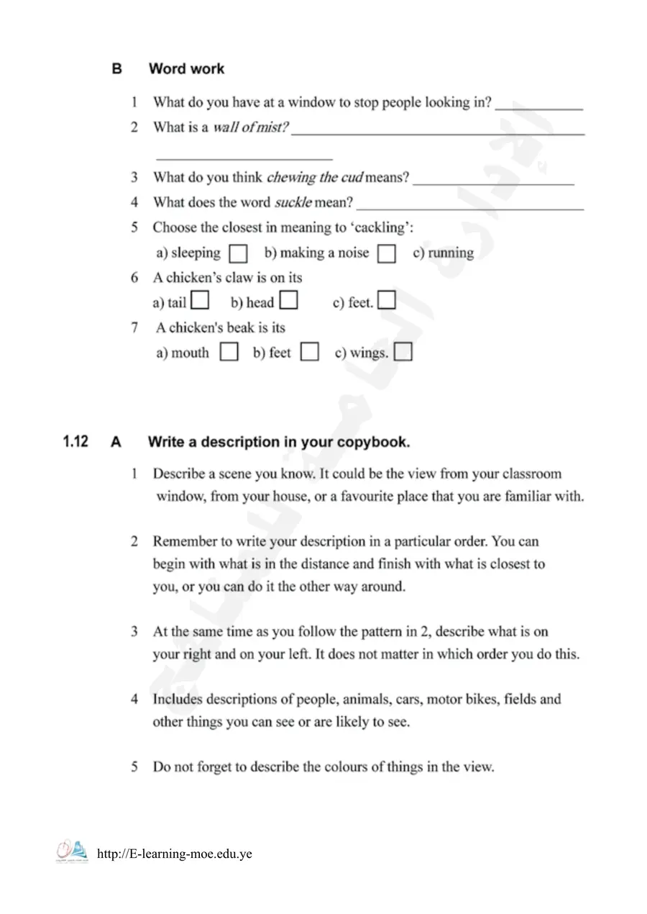

1.12 A Write a description in your copybook.
1 Describe a scene you know. It could be the view from your classroom window, from your house, or a favourite place that you are familiar with. 2 Remember to write your description in a particular order. You can begin with what is in the distance and finish with what is closest to you, or you can do it the other way around. 3 At the same time as you follow the pattern in 2, describe what is on your right and on your left. It does not matter in which order you do this. 4 Includes descriptions of people, animals, cars, motor bikes, fields and other things you can see or are likely to see. 5 Do not forget to describe the colours of things in the view.
4 Includes descriptions... بدلاً من صيغة الأمر Include (انظر بند 5: Do not forget...)، كما كُتبت motor bikes منفصلة إلى كلمتين؛ وقد حُفظت الصيغة المطبوعة حرفياً.[
{
"label_ar": "1) حدّد المكان وزاوية الرؤية (Classroom window / House / Favourite place)",
"placeholder": "I stood at our classroom window and looked out over the town."
},
{
"label_ar": "2) ابدأ بأحد الطرفين (في الأفق البعيد أو أمامك مباشرة)",
"placeholder": "Far away on the horizon were rocky hills, while nearer to us stood a school yard."
},
{
"label_ar": "3) صف ما عن يمينك وعن يسارك (On my left / To my right)",
"placeholder": "To my left, farmers were working in bright green fields; to my right, a busy road ran past white stone houses."
},
{
"label_ar": "4) أدرج الناس والحيوانات أو المركبات والألوان مع ربط بـ (-ing) أو ترتيب الصفات",
"placeholder": "Just below the wall, a group of boys passed by, laughing and talking, and a small brown dog ran beside a yellow taxi."
},
{
"label_ar": "5) جملة ختامية تلخّص أقرب أو أبعد عنصر والجو العام",
"placeholder": "Closer to the window, three red birds rested on a tree branch in the warm morning sun."
}
]{
"wb_ocr_vs_image": "قُورنت صفحة WB ص 12 مع مخرجات tesseract.js eng: أخرجت OCR الرقم '112 A' (بلا نقطة)، وصُحّح إلى '1.12 A' بصرياً من wb-013.png؛ وحُفظ الخطأ المطبعي '4 Includes descriptions...' وكتابة 'motor bikes' منفصلة حرفياً."
}